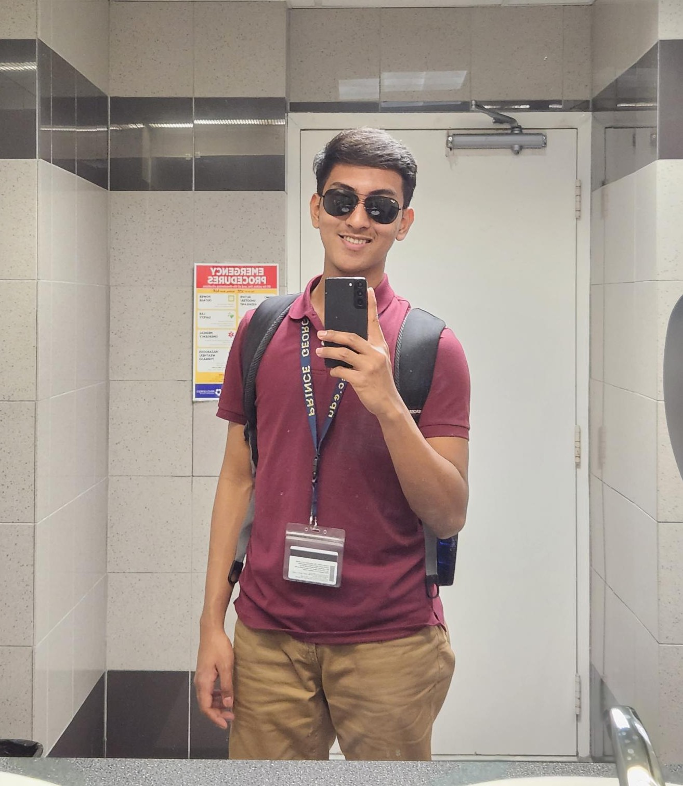
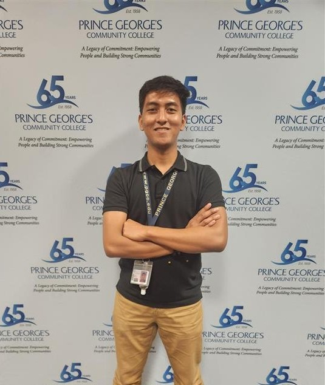
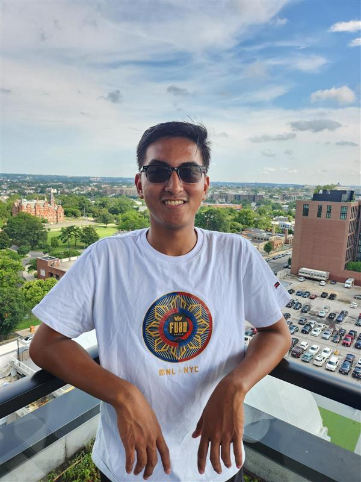

My Lifestyle
Since I moved to the U.S. in 2023, my lifestyle has changed. It was hard for me to adjust. I almost never exercised, unlike when I was in the Philippines. I became lazy and stopped taking care of my body. Recently, I noticed that my laziness was affecting my health, so I decided to change myself. I started doing physical activities like running, swimming, biking, and playing sports. I also began traveling whenever I’m free to reset and have fun.

My 2023 self

My 2024 self

My 2025 self